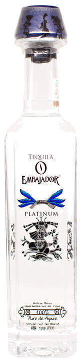

EMBAJADOR · BLANCO
Platinum
Cristalino, seguro de sí y listo para entrar sin hacer ruido. Platinum es el lado más fresco de la casa: ideal para brindar frío, mezclar bonito y dejar que el agave lleve la conversación.
MomentoPrimer brindisCarácterLimpio y fresco